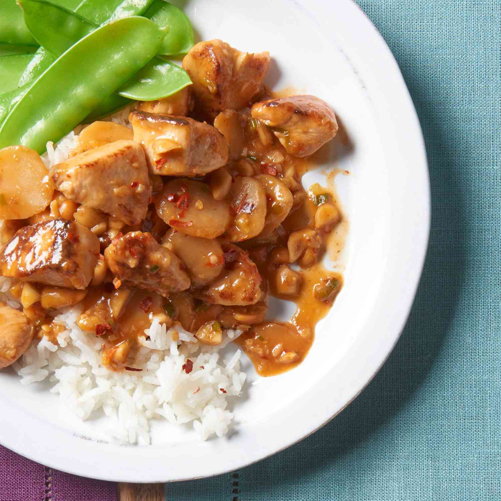

Kung Pao Chicken

This kung pao chicken recipe with marinated chicken, water chestnuts, and peanuts is easy to make at home for a Chinese restaurant favorite. The sweet and spicy chili sauce thickens beautifully as it cooks. Serve over steamed rice for a complete meal.
Ingredients:
- 2 tablespoons white wine, divided
- 2 tablespoons soy sauce, divided
- 2 tablespoons sesame oil, divided
- 1 ½ teaspoons cornstarch
- 1 pound skinless, boneless chicken breast halves, cut into chunks
- 2 tablespoons hot chili paste or to taste
- 1 ½ tablespoons brown sugar
- 1 teaspoon distilled white vinegar
- 1 (8-ounce) can water chestnuts, drained
- 3/4 cup chopped peanuts
- 4 green onions, chopped
- 1 tablespoon chopped garlic
Steps:
- Gather all ingredients.
- Whisk 1 tablespoon wine, 1 tablespoon soy sauce, 1 tablespoon sesame oil, and 1 ½ teaspoons cornstarch in a large glass bowl until smooth. Add chicken pieces and toss to coat. Cover the dish and refrigerate for 30 minutes.
- Combine remaining 1 tablespoon wine, 1 tablespoon soy sauce, and 1 tablespoon sesame oil in a medium bowl. Whisk in chili paste, brown sugar, and vinegar. Add water chestnuts, peanuts, green onions, and garlic and toss to coat.
- Transfer water chestnut sauce mixture to a medium skillet. Heat slowly over medium heat until aromatic.
- Meanwhile, transfer chicken from marinade into a large skillet; cook over medium-high heat, stirring, until chicken is cooked through and juices run clear.
- Combine water chestnut mixture and cooked chicken together in one skillet. Adjust heat and simmer until sauce thickens and coats chicken, 1 to 2 minutes.